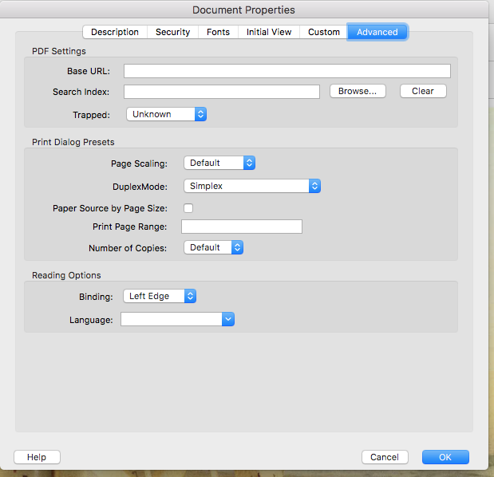
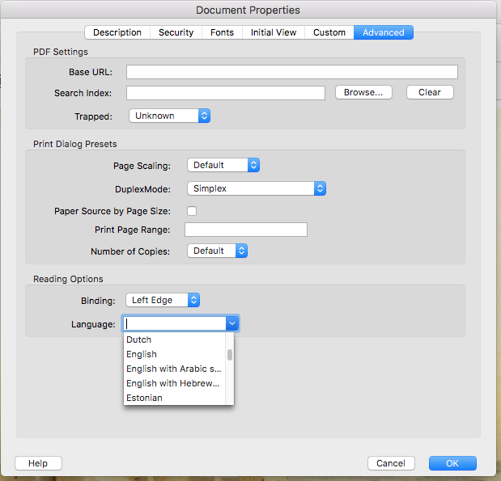

Open Document Properties
Update Document Properties
FAQs
Authoritative How-To
The authoritative guidelines for tagging PDFs in Adobe Acrobat Pro is provided by the Department of Health and Human Services. Here is the location of the online pdf file (.pdf) as of October 18, 2018.
Set Language
From the HHS Document, Section 508 GuideTagging PDF’s in AdobeAcrobat Pro